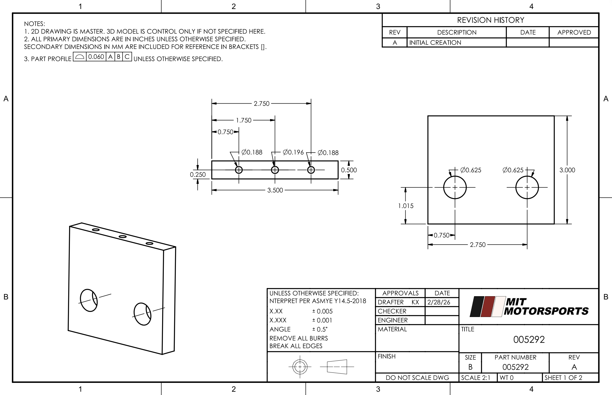

MIT Motorsports: Driverless Mechanisms
September 2025 - May 2026


This year was the first year in the history of MIT Motorsports, MIT’s competitive Formula SAE (FSAE) team, where the racecar we designed and built from scratch was also designed to drive fully autonomously! As Responsible Engineer for Driverless Mechanisms, I led the design of our driverless power steering system.
I began by defining quantitative system requirements, including steering requirements of 12.6 Nm peak torque, 6.3 Nm nominal torque, and 200 deg/s steering rate; maximum mass of 2.04 kg; and other functional requirements. Due to packaging constraints, the full actuation system also needed to fit within 50 mm, or just under 2 inches. This constraint was one major consideration in motor sizing, as I'll describe later.


and evaluated multiple architectures through a formal design review process, designing a column-mounted motor and pulley system packaged within 2 inches and weighing 0.56 kg. Iterated the system through a full design cycle into fabrication, including custom welding jig design and machining.
Through this project I learned the rigor of engineering and the importance of research, justification, and communication within engineering, particularly in a team setting. In MIT Motorsports, we follow the full design process with design review and feedback, from setting design requirements to fabrication and testing. It’s through these rigorous design reviews that we receive feedback, communicate and collaborate with other subsystems, and improve on our designs.
Skills
- Design/CAD: Siemens NX
- PLM: Siemens Teamcenter
- Machining and fabrication: manual mill, CNC mill (CAM, conversational programming), lathe, waterjet, 3d printing
Throughout the season, I also helped out with a few other tasks on different parts of the car.